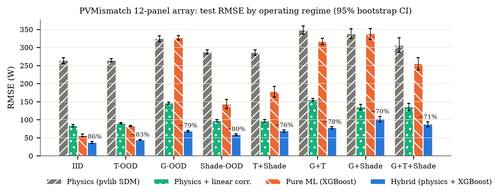
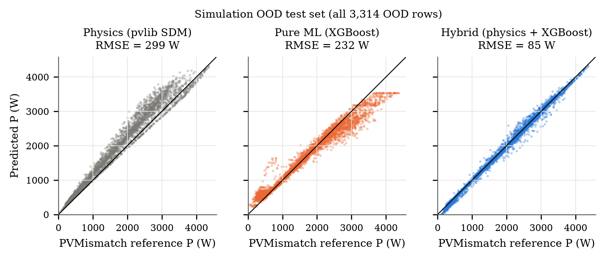
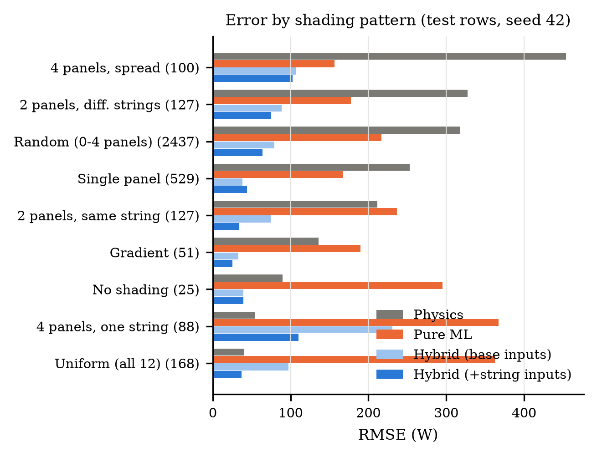
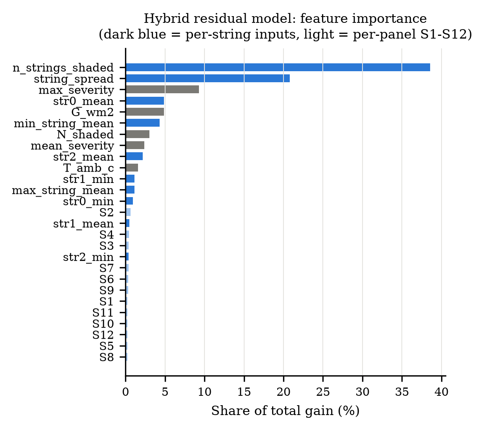
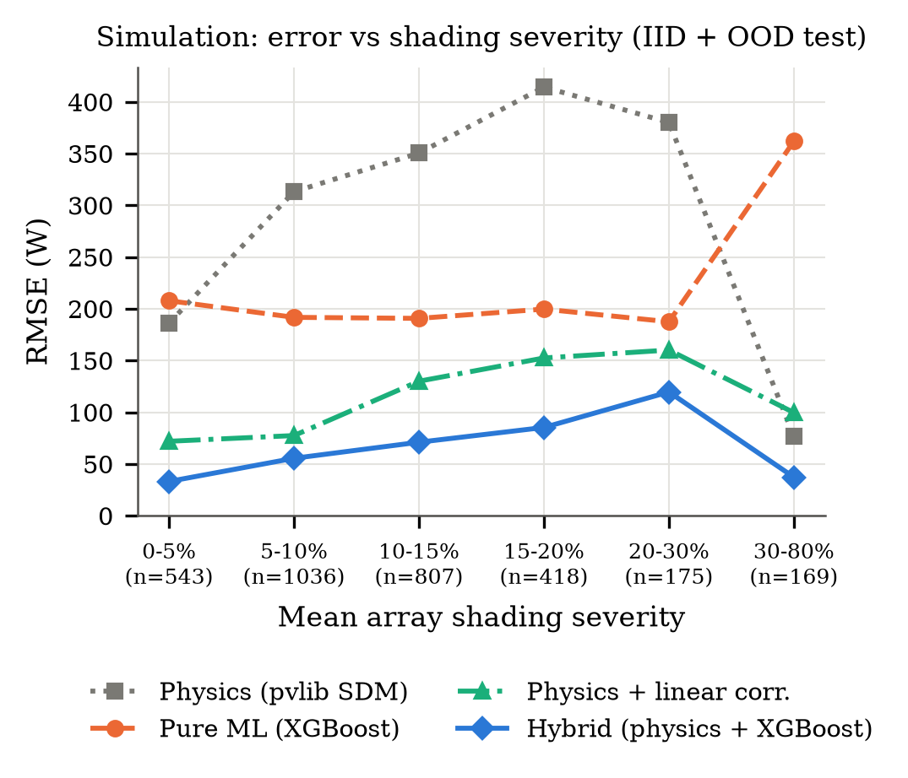
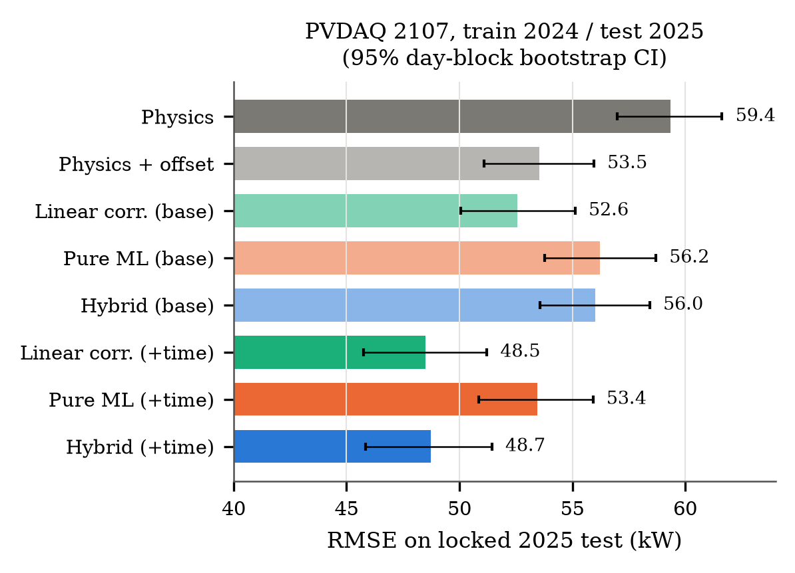

Abstract—Physics-based photovoltaic (PV) models such as the single-diode model (SDM) extrapolate reliably. Under partial shading, however, they misestimate array power, because they use the mean irradiance and ignore electrical mismatch and bypass-diode behaviour. Pure machine-learning (ML) models can learn these effects but fail outside their training range. We study a hybrid residual model that keeps the SDM prediction and learns only its error with gradient-boosted trees. We add topology-aware inputs that describe how shading is distributed across the series strings of the array. On a 5,000-row cell-level simulation of a 12-panel array (PVMismatch), with per-panel shading masks and seven out-of-distribution (OOD) regimes defined before training, the hybrid lowers RMSE relative to the SDM by 70–86% in every regime (all OOD rows: 298.9 → 63.5 W). It also outperforms pure ML (224.4 W), a constant-offset correction and a linear residual correction. The string-level inputs alone reduce the hybrid's in-distribution error by 37% and remove its failure under uniform shading. On field data from NREL PVDAQ System 2107, with 2024 used for development and 2025 held out as a locked test year, the hybrid lowers RMSE from 59.4 to 48.7 kW (−18%) and beats pure ML by 4.7 kW (95% day-block bootstrap CI [−5.5, −4.0]). There, however, a linear residual correction is equally accurate. All results carry bootstrap confidence intervals.
Index Terms—photovoltaics, partial shading, physics-guided machine learning, residual learning, XGBoost, out-of-distribution generalization, bootstrap.
I. Introduction
Accurate prediction of PV power is the basis of performance monitoring, fault detection, yield assessment and grid integration. Two families of models dominate. Physics-based models, chiefly the single-diode model (SDM) [1], [2] as implemented in pvlib [3], describe the current–voltage behaviour of a module from a small number of physically meaningful parameters. Because they encode the governing equations, they extrapolate gracefully to unseen irradiance and temperature. They also rest on an idealisation: every cell of the array is assumed to receive the same irradiance.
Partial shading violates this assumption. A shaded cell in a series string limits the current of the entire string. Once the shaded cells would be driven into reverse bias, bypass diodes conduct, and the array power–voltage curve develops several local maxima [4]–[6]. An SDM evaluated at the mean irradiance of the array cannot represent any of these effects. It systematically overestimates power, and it gives the same answer for every arrangement of a given amount of shade.
Data-driven models avoid fixed assumptions [7], [8], and gradient-boosted tree ensembles such as XGBoost [9] remain among the strongest learners for tabular data [10]. Tree ensembles, however, are piecewise constant. Beyond the range of their training data they return the value of the outermost leaves and cannot extrapolate. Real systems routinely meet such conditions: heatwaves, unusually bright days, or new shading patterns.
Physics-guided ML [11]–[13] combines the two. Its simplest form is residual learning: the ML model does not predict the output itself, but a correction to a physics prediction. The physics model then carries the dominant trend, and the learner only needs to model a bounded discrepancy.
This paper evaluates residual learning for PV power under partial shading. Our contributions are:
- A cell-level partial-shading benchmark: 5,000 PVMismatch [14] simulations of a 3 × 4 array with per-panel masks and seven OOD regimes fixed before training. This replaces the irradiance-scaling approximation commonly used for shading.
- Topology-aware residual inputs, derived from the series–parallel structure of the array: per-string minimum and mean irradiance, and the number of strings containing shade. They reduce the hybrid's error by 24–37% and fix its failure under uniform shading.
- Comparisons against simple correction baselines (constant offset, linear residual) as well as pure ML. These show when a nonlinear correction is actually needed.
- A leakage-free field evaluation on NREL PVDAQ data: design choices are made only in a development year, and uncertainty is estimated with an autocorrelation-aware day-block bootstrap. This revealed that a smaller gain reported in an earlier version of this work came almost entirely from removing a constant bias.
II. Related Work
A. PV performance models
The five-parameter single-diode model is the standard equivalent-circuit description of a PV module [1], [5]. The CEC parameterisation [2] supplies parameters for thousands of commercial modules, and pvlib [3] provides open implementations together with cell-temperature models such as the Sandia Array Performance Model (SAPM) [15]. These models are accurate for uniformly illuminated arrays and are routinely used as baselines.
B. Modelling partial shading
Mismatch in series-connected cells and the role of bypass diodes were analysed early by Bishop [4]. Later circuit-level models simulate arrays under arbitrary shading by solving the I–V curve of every cell or sub-module [5], [6]. PVMismatch [14] is an open-source implementation of this approach, and we use it as our high-fidelity reference. Such simulators are accurate but need explicit knowledge of the shading pattern and are expensive to run inside a monitoring loop.
C. Machine learning for PV
Neural networks, support-vector machines and tree ensembles have been widely used for PV power prediction and forecasting [7], [8]. These models interpolate well within the training distribution, but their behaviour under distribution shift is rarely evaluated explicitly.
D. Physics-guided machine learning
Ways of integrating scientific knowledge with ML include physics-informed loss functions [12], physics-guided architectures, and hybrid models in which ML corrects a mechanistic model [11], [13]. Residual hybrids are attractive in engineering settings because they keep the physics model's interpretability and extrapolation behaviour. Our study isolates when such a residual correction is beneficial. It compares the correction against equally simple alternatives and evaluates it under explicitly defined distribution shifts.
III. Physical Background
The SDM relates the module current I and voltage V by
where IL is the photocurrent, I0 the diode saturation current, Rs and Rsh the series and shunt resistances, and nNsVth the modified ideality factor. The CEC model [2] scales these parameters with effective irradiance G and cell temperature Tc, and the maximum power point Pmp is found by solving (1). Cell temperature follows the SAPM [15]:
with ambient temperature Ta, wind speed WS and empirical coefficients a, b and ΔT.
In a series string, all modules carry the same current. When one module is shaded, its photocurrent drops and it limits the string. If the operating current exceeds what the shaded cells can generate, those cells are reverse-biased until the bypass diode across their sub-string conducts. That sub-string then contributes approximately −0.5 V instead of its normal voltage. Strings connected in parallel share the same voltage, so a string with a heavily shaded module may operate far from its own optimum.
The power lost therefore depends on which modules are shaded, and not only on how much light is lost on average. Concentrating the same shade in one string leaves the other strings unaffected, whereas spreading it across strings impairs every one of them. An SDM driven by the array-mean irradiance cannot distinguish these cases. This is the structural blind spot that the residual model must learn.
IV. Methodology
A. Models
Let X denote the operating conditions, Pref the reference power, and ΔP = Pref − Pphys the physics residual. We compare five predictors:
- Physics: Pphys from the CEC SDM at the array-mean irradiance, with SAPM cell temperature.
- Physics + offset: Pphys + mean(ΔPtrain), the trivial correction.
- Linear correction: Pphys + wTX, a ridge regression [16] fitted to ΔP on standardised inputs (α = 1).
- Pure ML: P̂ = fθ(X), XGBoost trained on Pref.
- Hybrid: P̂ = Pphys + gθ(X), XGBoost trained on ΔP.
Outside the training range, fθ saturates at its outermost leaf values. gθ saturates too, but it is added to Pphys, which keeps following the physical trend. The hybrid therefore inherits the extrapolation behaviour of the physics model, while the learner corrects its systematic error.
B. Input features
For the simulation, the base inputs are G, Ta, the twelve per-panel irradiance fractions S1…S12 (1 = unshaded), the number of shaded panels, and the mean and maximum shading severity (1 − Si).
Motivated by Section III, we add topology-aware inputs, computed per string k ∈ {1, 2, 3}: the minimum irradiance fraction (the current-limiting panel) and the mean irradiance fraction. Across strings we add the number of strings containing shade, the minimum and maximum string mean, and their spread. These inputs cost nothing to compute from the mask and encode the series–parallel structure directly. We report results with both input sets.
For the field data, the base inputs are plane-of-array (POA) irradiance, ambient temperature, SAPM cell temperature and wind speed. The base+time set adds sin/cos encodings of hour-of-day and day-of-year, a proxy for sun position (angle of incidence) and season, since the site coordinates are not in the dataset.
C. Learner configuration
Both XGBoost models use identical, untuned settings: 300 trees, maximum depth 4, learning rate 0.03, row and column subsampling 0.8, and squared-error loss. The comparison therefore reflects the formulation, not tuning effort. Every experiment is repeated with five seeds {42, 7, 21, 100, 123}. Field predictions are clipped at 0 kW.
D. Metrics and uncertainty
We report RMSE, MAE, mean bias and R2. For the simulation, 95% confidence intervals come from 2,000 bootstrap resamples of the test rows [17]. A paired bootstrap applies the same resample to two models and gives the CI of their RMSE difference. Field readings at 15-min resolution are strongly autocorrelated within a day, so resampling single readings would understate the uncertainty. We therefore resample whole days, a block bootstrap [18], again paired across models.
V. Datasets
A. Cell-level partial-shading simulation
We simulate a 3 × 4 array (three parallel strings of four modules) of the 96-cell CEC module AU_Optronics_PM096B00_323 (322.7 Wp at STC; about 3.87 kWp for the array). The reference Pref comes from PVMismatch [14], which solves every cell's I–V curve and combines them through series connections, bypass diodes and the parallel strings.
The physics prediction Pphys applies the pvlib CEC SDM to the array-mean irradiance. Both simulators use the same SAPM cell temperature, evaluated at the mean effective irradiance with 1 m/s wind. ΔP therefore reflects shading physics and not a difference between temperature models.
Each row draws G ∈ [100, 1200] W/m², Ta ∈ [0, 60] °C and a mask. Seventy percent of the masks are random (0–4 panels, severity 20–80%). Thirty percent are structured patterns repeated at random G and Ta (Table I). Out-of-distribution regimes are fixed in the generator before any model is trained: G outside [200, 1000] W/m², Ta outside [10, 45] °C, or any panel more than 65% shaded. This yields 1,686 in-distribution (IID) rows and 3,314 OOD rows in seven groups. Generation takes under one minute on six CPU cores.
Shading patterns in the simulation dataset
| Pattern | Rows | Mean ΔP/Pref of SDM |
|---|---|---|
| Random, 0–4 panels | 3,500 | +16.1% |
| Single panel (4 positions, 30–90%) | 624 | +13.7% |
| Uniform, all 12 panels | 228 | +7.3% |
| 2 panels, same string | 153 | +11.0% |
| 2 panels, different strings | 152 | +17.3% |
| 4 panels, one string | 114 | +1.8% |
| 4 panels, spread over strings | 114 | +32.8% |
| Gradient across array | 76 | +11.3% |
| No shading | 39 | +0.5% |
The last column of Table I quantifies the SDM's blind spot. With four panels shaded, the SDM overestimates power by only 1.8% when the shade is concentrated in one string, but by 32.8% when it is spread across strings. The two cases share the same mean irradiance.
B. Simulator calibration and a corrected defect
Without shading, the two simulators should agree, apart from small differences between PVMismatch's default cell model and the CEC parameters. Table II confirms agreement within about ±5% over the operating range. The gap is largest at low irradiance, where both models are least certain.
Unshaded agreement: (Pref − Pphys)/Pphys
| G (W/m²) | Rows | Mean | Std. |
|---|---|---|---|
| 100–300 | 148 | −5.5% | 3.1% |
| 300–600 | 186 | −0.5% | 1.8% |
| 600–900 | 202 | +1.7% | 1.6% |
| 900–1200 | 222 | +3.1% | 1.7% |
This check exposed a defect in the original dataset generator. Each module was assembled from 96 independently constructed cell objects, with the cell temperature passed to each constructor. At high cell temperatures this made the simulated array power collapse. For example, an unshaded array at 1000 W/m² and 59 °C gave about 100 W instead of about 3 kW, and 343 of 5,000 rows were invalid. We traced the failure to the module assembly: individual cells behaved correctly, and the same module configured through PVMismatch's array-level setTemps/setSuns methods produced correct output. The corrected generator is also about 20× faster. We report this because it shows the value of validating a simulator on trivial cases before treating it as ground truth.
C. NREL PVDAQ System 2107
The field dataset, from the public NREL PVDAQ archive [19], contains 15-min POA irradiance, ambient temperature, wind speed and power for a utility-scale system from 2017 to 2025. Measured DC power is available only for 2024–2025; earlier years record inverter-derived power, which is a different quantity. We therefore use 2024 (16,754 readings) and 2025 (16,837 readings). The system has no shading labels.
The SDM baseline uses the Canadian Solar CS6P-260P CEC module and is scaled by an estimated module count of 2,797 (about 728 kW). This count is derived from the 2024 peak DC power only.
VI. Experimental Protocol
Simulation. All learned models are trained only on IID rows. For the IID test, the IID rows are split 80/20 with five seeds (338 test rows per seed). For the OOD tests, the models are trained on all IID rows and evaluated on each OOD group, again over five seeds.
Field data. 2025 is a locked test year, used once to evaluate every model. All decisions are made with 2024 only: the input set, the module-count scaling, and the median used to fill missing wind values. The input set is chosen by 6-fold blocked cross-validation within 2024, using contiguous two-month blocks so that neighbouring readings do not leak between training and validation [20]. We report all configurations, marking the one selected on 2024.

VII. Results
A. Simulation: accuracy across regimes
Table III lists the RMSE of every model in every regime, and Fig. 1 shows the 95% CIs. With topology-aware inputs, the hybrid is the most accurate model in all nine evaluations. It reduces RMSE relative to the SDM by 86% IID and by 70–83% in the OOD groups, and its RMSE varies by only 0.4–4.5 W across seeds. A paired bootstrap shows it beats pure ML in every regime, with differences from −19 W (IID, CI [−23, −16]) to −258 W (G-OOD, CI [−265, −252]); none of the 2,000 resamples favours pure ML.
Simulation RMSE (W), pooled over five seeds (+string inputs)
| Test set | n | Phys. | +Off. | Lin. | ML | Hyb. | Hyb.† |
|---|---|---|---|---|---|---|---|
| IID | 338 | 263.9 | 174.2 | 83.5 | 56.2 | 36.9 | 58.2 |
| T-OOD | 1228 | 264.2 | 177.3 | 90.1 | 82.7 | 44.0 | 58.8 |
| G-OOD | 677 | 324.3 | 247.8 | 146.0 | 326.3 | 68.2 | 91.4 |
| S-OOD | 409 | 287.5 | 139.4 | 97.0 | 143.3 | 58.5 | 82.4 |
| T+S | 302 | 285.8 | 151.4 | 96.4 | 177.8 | 68.7 | 94.0 |
| G+T | 445 | 347.7 | 272.5 | 154.7 | 316.4 | 77.5 | 97.3 |
| G+S | 152 | 337.8 | 210.4 | 135.1 | 337.9 | 101.9 | 124.7 |
| G+T+S | 101 | 305.7 | 195.1 | 135.3 | 255.1 | 87.3 | 122.9 |
| All OOD | 3314 | 298.9 | 204.6 | 118.2 | 224.4 | 63.5 | 84.1 |
B. Why pure ML fails out of distribution
Fig. 2 compares predictions with the reference on all OOD rows. The SDM overestimates almost everywhere. Pure ML tracks the reference up to about 3.5 kW and then flattens, because no training row has G above 1000 W/m², so its outermost leaves cap the prediction. In the G-OOD group its RMSE (326 W) is even worse than the SDM's (324 W). The hybrid stays close to the diagonal over the whole range (68 W). On average, simple corrections remove part of the SDM's error: the offset lowers the OOD RMSE to 205 W and the linear correction to 118 W. Neither can represent the dependence on the shading pattern, so both remain 1.9–3.2× worse than the hybrid.


C. Effect of the shading pattern and of topology-aware inputs
Fig. 3 breaks the error down by shading pattern. With base inputs only, the hybrid had two failure modes. Under uniform shading it scored 97 W against the SDM's 41 W, and with four panels in one string 231 W against 55 W. In both cases the SDM is already nearly right, but the learned correction applied an "average shading" adjustment that depended mainly on shading severity. The topology-aware inputs let the model recognise these configurations. The error falls to 37 W for uniform shading, now better than the SDM, and to 110 W for one-string shading. It also falls from 75 to 34 W for two panels in the same string.
Concentrated one-string shading remains the only pattern where the SDM is more accurate. There, the true loss happens to coincide with the mean-irradiance approximation, so any learned correction can only add noise.
The gain importances in Fig. 4 support this interpretation. The two most informative inputs are the number of strings containing shade (39% of total gain) and the spread of mean irradiance between strings (21%). Both are topology-aware quantities that the SDM cannot see. The individual panel fractions Si contribute little once these summaries are available.

D. Error versus shading severity
Fig. 5 shows the error as a function of the mean shading severity of the array. The SDM error grows with severity up to about 20% and then falls sharply above 30%, where most rows are uniformly shaded and the mean-irradiance assumption holds. Pure ML degrades sharply at the highest severities, which lie largely outside its training range. The hybrid has the lowest error in every bin, including heavy shading (37 vs. 77 W for the SDM).

E. Field data: development-year selection
Table IV reports the blocked CV within 2024. Adding time features lowers the validation RMSE of every learned model. For the hybrid it falls from 52.3 to 40.3 kW, and it improves in all six folds. With base inputs, the learned models beat the SDM by at most 2.2 kW on average, and in the September–October fold all of them are worse than the SDM. This points to a seasonal effect that the base inputs cannot represent. Based on this table alone, base+time was selected before the test year was used.
Blocked CV within 2024: mean RMSE (kW) over six folds
| Inputs | Phys. | Lin. | ML | Hyb. | Folds Hyb.<Phys. |
|---|---|---|---|---|---|
| base | 53.5 | 51.3 | 52.2 | 52.3 | 4 / 6 |
| base+time | 53.5 | 44.6 | 41.8 | 40.3 | 6 / 6 |
F. Field data: locked 2025 test
Table V and Fig. 6 give the results on 2025. Three findings stand out.
- Bias dominates the base comparison. With base inputs, the hybrid (56.0 kW) does not beat a constant offset (53.5 kW). Most of the gain over the SDM comes from removing its −26.8 kW mean bias, which plausibly stems from the estimated system scaling.
- Time features provide the real improvement. The hybrid improves by 7.3 kW (paired CI [−8.7, −5.9]) to 48.7 kW, 18% below the SDM (CI [−12.1, −9.1] kW). It beats pure ML by 4.7 kW (CI [−5.5, −4.0]).
- A linear correction is sufficient here. The linear residual model reaches 48.5 kW. On this unshaded system the residual is smooth, dominated by bias, angle of incidence and season, so a nonlinear correction offers no advantage.
PVDAQ 2107: train 2024, locked test 2025 (16,837 readings)
| Model | Inputs | RMSE [95% CI] | MAE | Bias | R2 |
|---|---|---|---|---|---|
| Physics | — | 59.4 [57.0, 61.6] | 41.9 | −26.8 | .938 |
| Phys.+offset | — | 53.5 [51.1, 56.0] | 37.1 | −7.6 | .950 |
| Linear corr. | base | 52.6 [50.1, 55.1] | 34.7 | −6.8 | .952 |
| Pure ML | base | 56.2 [53.8, 58.7] | 39.1 | −8.0 | .945 |
| Hybrid | base | 56.0 [53.6, 58.4] | 39.0 | −8.6 | .945 |
| Linear corr. | +time | 48.5 [45.7, 51.2] | 33.0 | −6.8 | .959 |
| Pure ML | +time | 53.4 [50.9, 55.9] | 38.4 | −11.9 | .950 |
| Hybrid | +time | 48.7 [45.8, 51.4] | 33.2 | −7.5 | .958 |

G. Field data: error by operating regime
Table VI and Fig. 7 break the 2025 error down by regime. The hybrid helps most where the SDM's approximations are weakest. At cell temperatures above 40 °C its error is 38% lower, consistent with an imperfect temperature coefficient. In the morning (08–10 h) it is 35% lower, where angle-of-incidence losses are largest, and at high irradiance 22–24% lower.
The late-afternoon degradation seen with base inputs (+9% RMSE at 16–18 h) disappears. At dawn and dusk, and below 100 W/m², however, the hybrid is worse than the SDM: 25 vs. 17 kW at 06–08 h and 21 vs. 15 kW below 100 W/m². The absolute errors are small there because the power itself is low.
2025 RMSE (kW) by regime: physics vs. hybrid (+time)
| Regime | n | Phys. | Hyb. | Change |
|---|---|---|---|---|
| G < 100 W/m² | 3499 | 15.1 | 20.9 | +38% |
| G 300–500 W/m² | 2258 | 76.5 | 63.1 | −17% |
| G 700–900 W/m² | 3314 | 67.5 | 52.5 | −22% |
| G 900–1100 W/m² | 2118 | 60.0 | 45.9 | −24% |
| 06–08 h | 1358 | 16.6 | 25.4 | +53% |
| 08–10 h | 2892 | 62.1 | 40.3 | −35% |
| 12–14 h | 2915 | 67.8 | 61.7 | −9% |
| 16–18 h | 2375 | 41.5 | 42.1 | +1% |
| Tc 20–30 °C | 3524 | 66.0 | 62.6 | −5% |
| Tc > 40 °C | 5367 | 62.6 | 38.9 | −38% |
| Wind 3–5 m/s | 3489 | 63.4 | 47.6 | −25% |

VIII. Discussion
The two settings give a consistent picture of when residual learning pays off. Its benefit depends on the structure of the physics model's error, not just its size.
In the simulation, the SDM's error depends nonlinearly on the shading topology: the same mean irradiance can yield losses between 2% and 33%. A constant or linear correction cannot represent this, whereas the tree-based residual model with string-level inputs can. In the field data, the error is dominated by a constant bias and smooth diurnal and seasonal terms, which a linear model captures equally well. In both settings, correcting the physics model clearly beats replacing it: pure ML is the worst learned model out of distribution and loses to the hybrid by 4.7 kW on field data.
A second lesson concerns what the residual model is told. With only per-panel fractions and severity summaries, XGBoost learned that "more shade means more correction", a heuristic that is wrong exactly where the SDM is already right. Encoding the array's electrical structure as input features, at zero computational cost, removed most of this error. This is a light form of physics guidance that complements the residual formulation.
Finally, the evaluation design changed our conclusions materially. An earlier version of this study reported a 5.5% field improvement for the hybrid without simple baselines. A constant offset alone achieves 9.8%. Only with leakage-free selection, simple baselines and day-block CIs does the evidence support the claims made here.
IX. Limitations and Future Work
Reference model. PVMismatch is itself a model. Its default cell parameters differ slightly from the CEC module (Table II), and its outputs have not been validated against measurements of shaded arrays.
Topology inputs. The topology-aware inputs were motivated by an analysis of the base model's errors on test patterns. They are physically justified, improve every regime (including the IID splits) and are reported alongside the base results, but they were not chosen by a separate validation procedure.
Field evaluation. The field study covers a single system without shading labels, so its gains cannot be attributed to shading. Sun position is approximated by time features, and the system scaling is estimated.
Model limitations. Hyperparameters were not tuned, and the hybrid underperforms the SDM at very low irradiance.
Future work. We plan to:
- add a low-irradiance fallback to the SDM, selected by development-year CV;
- validate on additional PVDAQ systems with known geometry and true solar-position inputs;
- use measured or camera-derived shading masks;
- tune hyperparameters within the development data.
X. Conclusion
A physics-guided residual model, the single-diode model plus an XGBoost correction with topology-aware inputs, reduced PV power error under cell-level partial shading by 70–86% across one IID and seven OOD regimes. It remained accurate where pure ML failed to extrapolate. String-level inputs were the most informative features and fixed the hybrid's failure under uniform shading. On real field data, under a strict chronological protocol, the hybrid reduced error by 18% and significantly outperformed pure ML. A linear correction matched it there, which shows that the value of a nonlinear correction depends on how structured the physics model's error is.
Code and Data Availability
The code, the corrected dataset generator, the 5,000-row simulation dataset, all metrics and an interactive demo are available at github.com/AishanNikam/hybrid-physics-ml-pv-performance.
References
- W. De Soto, S. A. Klein, and W. A. Beckman, “Improvement and validation of a model for photovoltaic array performance,” Solar Energy, vol. 80, no. 1, pp. 78–88, 2006.
- A. P. Dobos, “An improved coefficient calculator for the California Energy Commission 6 parameter photovoltaic module model,” J. Sol. Energy Eng., vol. 134, no. 2, 2012.
- W. F. Holmgren, C. W. Hansen, and M. A. Mikofski, “pvlib python: a python package for modeling solar energy systems,” J. Open Source Softw., vol. 3, no. 29, p. 884, 2018.
- J. W. Bishop, “Computer simulation of the effects of electrical mismatches in photovoltaic cell interconnection circuits,” Solar Cells, vol. 25, no. 1, pp. 73–89, 1988.
- M. G. Villalva, J. R. Gazoli, and E. R. Filho, “Comprehensive approach to modeling and simulation of photovoltaic arrays,” IEEE Trans. Power Electron., vol. 24, no. 5, pp. 1198–1208, 2009.
- H. Patel and V. Agarwal, “MATLAB-based modeling to study the effects of partial shading on PV array characteristics,” IEEE Trans. Energy Convers., vol. 23, no. 1, pp. 302–310, 2008.
- A. Mellit and S. A. Kalogirou, “Artificial intelligence techniques for photovoltaic applications: A review,” Prog. Energy Combust. Sci., vol. 34, no. 5, pp. 574–632, 2008.
- J. Antonanzas, N. Osorio, R. Escobar, R. Urraca, F. J. Martinez-de-Pison, and F. Antonanzas-Torres, “Review of photovoltaic power forecasting,” Solar Energy, vol. 136, pp. 78–111, 2016.
- T. Chen and C. Guestrin, “XGBoost: A scalable tree boosting system,” in Proc. 22nd ACM SIGKDD Int. Conf. Knowl. Discov. Data Min., 2016, pp. 785–794.
- L. Grinsztajn, E. Oyallon, and G. Varoquaux, “Why do tree-based models still outperform deep learning on typical tabular data?” in Adv. Neural Inf. Process. Syst. (Datasets and Benchmarks Track), 2022.
- G. E. Karniadakis, I. G. Kevrekidis, L. Lu, P. Perdikaris, S. Wang, and L. Yang, “Physics-informed machine learning,” Nat. Rev. Phys., vol. 3, pp. 422–440, 2021.
- M. Raissi, P. Perdikaris, and G. E. Karniadakis, “Physics-informed neural networks: A deep learning framework for solving forward and inverse problems involving nonlinear partial differential equations,” J. Comput. Phys., vol. 378, pp. 686–707, 2019.
- J. Willard, X. Jia, S. Xu, M. Steinbach, and V. Kumar, “Integrating scientific knowledge with machine learning for engineering and environmental systems,” ACM Comput. Surv., vol. 55, no. 4, 2022.
- SunPower Corp., “PVMismatch: an explicit IV & PV curve trace calculator for PV system circuits,” [Online]. Available: github.com/SunPower/PVMismatch
- D. L. King, W. E. Boyson, and J. A. Kratochvil, “Photovoltaic array performance model,” Sandia National Laboratories, Albuquerque, NM, Rep. SAND2004-3535, 2004.
- A. E. Hoerl and R. W. Kennard, “Ridge regression: Biased estimation for nonorthogonal problems,” Technometrics, vol. 12, no. 1, pp. 55–67, 1970.
- B. Efron and R. J. Tibshirani, An Introduction to the Bootstrap. New York: Chapman & Hall, 1993.
- H. R. Künsch, “The jackknife and the bootstrap for general stationary observations,” Ann. Statist., vol. 17, no. 3, pp. 1217–1241, 1989.
- National Renewable Energy Laboratory, “Photovoltaic Data Acquisition (PVDAQ) public datasets,” Open Energy Data Initiative (OEDI). [Online]. Available: data.openei.org
- C. Bergmeir and J. M. Benítez, “On the use of cross-validation for time series predictor evaluation,” Inf. Sci., vol. 191, pp. 192–213, 2012.